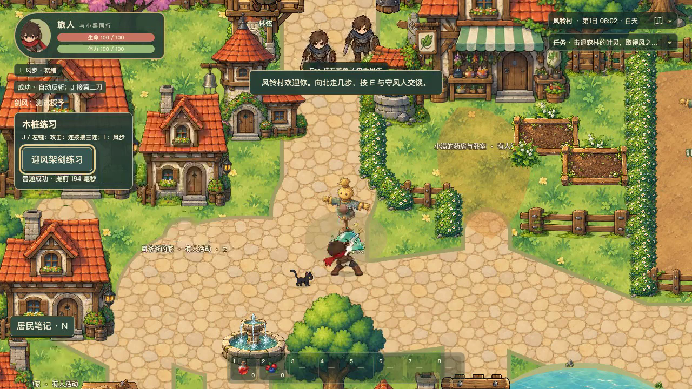
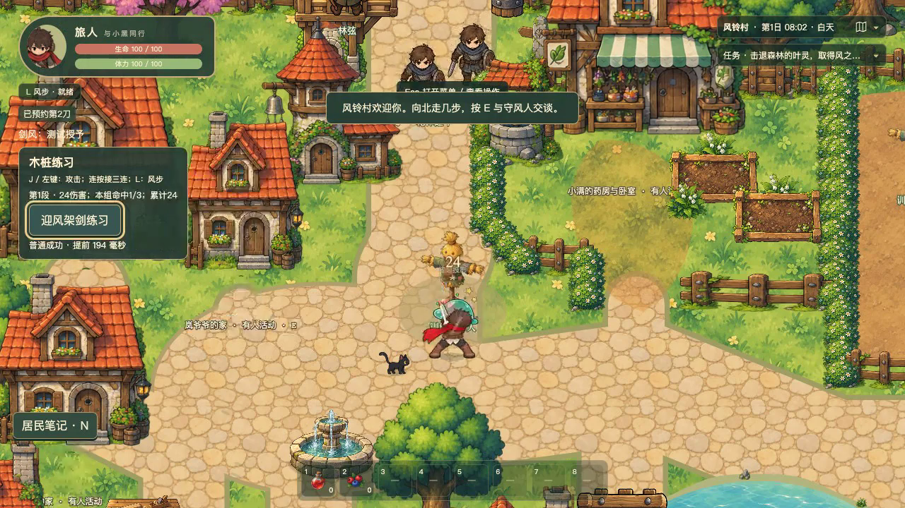
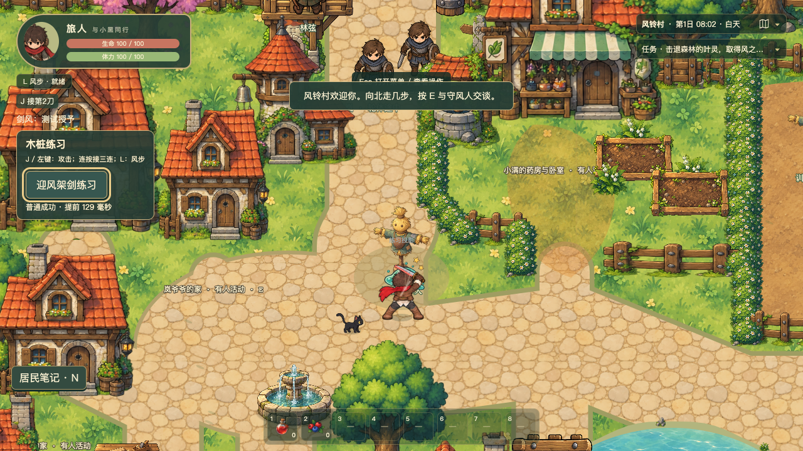
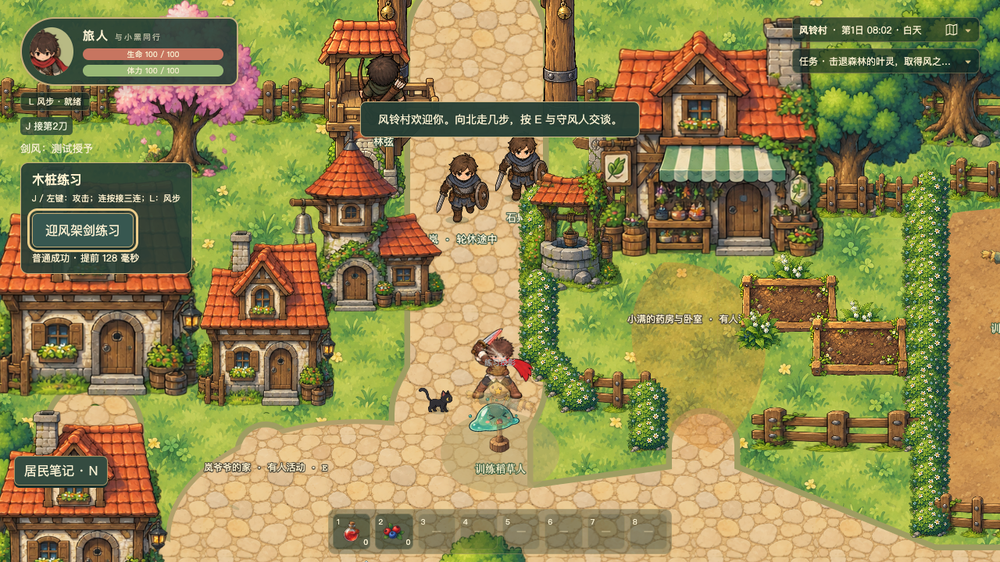
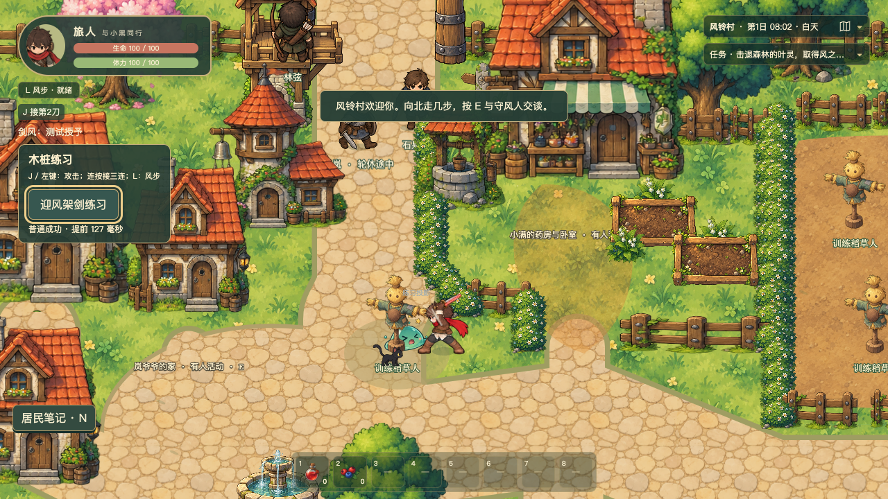
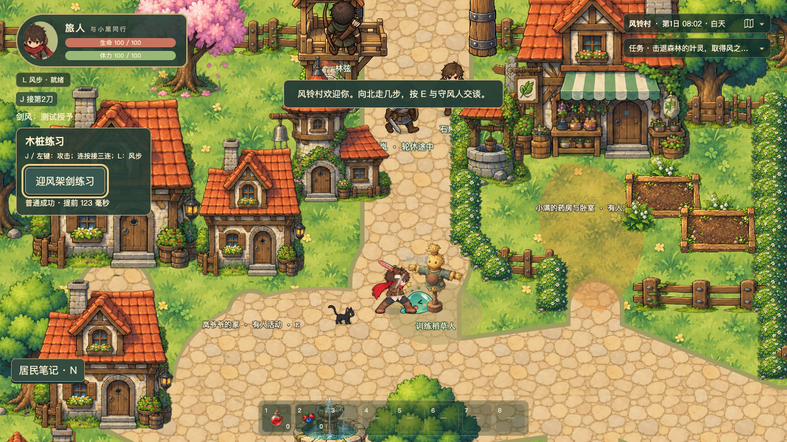

接触白闪 → 剑身红光 → 顺势反斩
当前5173工作区实际运行。录像为1280×720、正常速度，保留实际游戏音轨。伤害、窗口、停顿和原音色保持；本轮只改成功特效。

第一重拍：成功接触白闪，停顿首帧就可见。
随后红刃跟随实际武器姿态；命中有独立切入反馈。普通成功 → 红刃自动反斩 → J接二、三刀。精准成功：更清楚的双刃闪与细亮芯；仍遵循原时序。风步取消自动反斩：没有虚假命中；旧剑身红光清理。
背向：柔光在身体后，细红边覆盖可见钢刃。
正面红刃。
左向统一镜像。
右向红刃。进入练习：靠近木桩 → 迎风架剑练习 → 慢速教学。K／画布右键架剑，成功自动反斩，J接后续。用户主观亮度、设备试听与长期手感仍待验收。